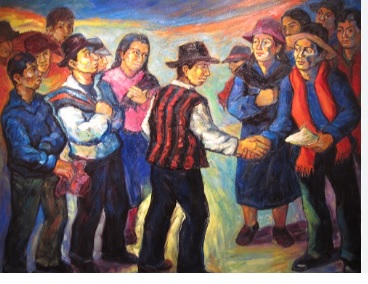

Preguntas
Resumen de la obra
La novela Los ríos profundos (1958) es una de las obras más representativas de José María Arguedas, en la que plasma la fusión de la cosmovisión indígena andina con la sensibilidad mestiza. La historia está narrada desde la perspectiva de Ernesto, un adolescente mestizo de catorce años, hijo ilegítimo de un abogado errante, que busca su lugar en el mundo.
La narración comienza con el viaje de Ernesto y su padre a través de los Andes peruanos. El joven, profundamente sensible, observa los paisajes con ojos líricos y simbólicos: los ríos, las montañas, los árboles y las aves son elementos vivos que transmiten mensajes espirituales y ancestrales.
Cuando padre e hijo llegan a Abancay, Ernesto es internado en un colegio religioso de carácter estricto y represivo. Allí experimenta la dureza de la disciplina y la jerarquía social que reproduce las desigualdades del país.
La vida escolar está marcada por la violencia, los castigos crueles de los religiosos y el abuso de los estudiantes más poderosos sobre los indefensos. Ernesto encuentra hermandad con los internos indígenas y marginados, hallando refugio en la música y en las tradiciones andinas.
Paralelamente, en el pueblo de Abancay los indígenas inician un levantamiento motivado por las injusticias. Una epidemia de tifus agrava la situación, y Ernesto presencia la explotación y el dolor del pueblo.
La novela muestra cómo Ernesto madura enfrentando la dureza de la vida, pero también aprendiendo a encontrar fuerza en la memoria, en la naturaleza y en la cultura andina. El título simboliza las corrientes profundas de identidad y resistencia de los pueblos del Perú.
